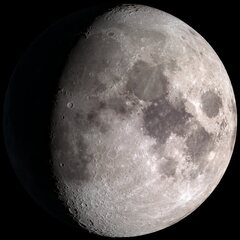

Only the Moon Matters
The sky looks like a painting, but the geometry is simple: the Sun lights half the Moon, and we see that half from a different angle as the Moon circles us.
1 Phases and geometry
Phases in geometry
What that geometry looks like from the ground.
The sky, looking south from 45.2°N – Knowlton, QC
2 How high the Moon rides
The Moon travels the same path round the sky as the Sun, to within 5°. So a full moon, sitting opposite the Sun, rides high in winter when the Sun is low, and low in summer when the Sun is high.
The day's arcs, looking south
Moon's highest point on each day of this month (tap or drag to pick a day)
In one month the Moon goes all the way round that path, so it climbs and sinks as much in 27 days as the Sun does in a year. Its highest point is always 90° − 45.2° + its declination.
How level 2 is worked out: the Sun placed by date on the ecliptic (good to about a degree), the Moon on the ecliptic at its average speed. The Moon's own 5.1° tilt is left out, which can move its real height by up to 5°. The faint dotted arc is the level 1 arc, for comparison.
3 The angle of the lit edge
The lit edge always points along the sky toward the Sun. As the Moon crosses the sky, the direction to the Sun turns against your horizon, so the same phase sits at a different angle at different hours.
The Moon across the sky on 27 November, looking south
How level 3 is worked out: the same real Sun and Moon as level 2 on 27 November. The lit edge points along the great circle from the Moon to the Sun, which is why it can point slightly upward even when the Sun is a little lower than the Moon. The Moons are drawn much larger than life, every 90 minutes; the ringed one is the chosen time.
4 How the Moon lights the night
Tristan Gooley, the natural navigator, favours a waxing moon about twelve days old for an evening walk, not the full moon: it “will usually rise significantly before the sun has set, meaning there is no period of total darkness during an evening walk”, while an eighteen-day moon leaves “a period of deep darkness” after dusk (The Lost Art of Reading Nature’s Signs, pp. 196–197). A moon that rises after sunset is a waning one, past full: that is the side he warns about, so his advice is about the waxing moon before full. Here is the light on open ground at 45.2°N, Knowlton, on 27 November, worked out minute by minute.
Light on the ground, sunset to sunrise (lux; each line up is ten times brighter)
Sky light from the Sun below the horizon Moonlight Both together Above the line
The green line, 0.01 lux, is our choice for “you could walk without a torch”: about the light of a half moon high in the sky. It is a judgement, not a measured limit.
What the chart shows here
- Full moon: above the line all night, . The Moon is low at dusk, but twilight covers that hour, and it is brightest when it is highest: .
- Two nights before full: the Moon is already high at sunset, so the first hour of dark is brighter ( lux at 6 pm against at full). But it sets at and leaves a dark spell before dawn: .
- Two nights after full: the Moon rises at , after twilight has faded, leaving a dark spell, then lights the rest of the night: .
The two answers are about different things. For an evening walk, Gooley’s waxing twelve-day moon is best, because it rises before sunset and leaves no dark gap; for the most usable light across a long late-November night at Knowlton, the full moon wins, because it is up for almost all of the 15 hours. The navigator’s rule is about the start of the evening; the number is about the whole night. The chart assumes a flat, open horizon: behind trees or hills a low Moon is hidden, which favours a Moon that is already high at dusk.
How level 4 is worked out (values are approximate, good to perhaps a factor of two on a clear night): the same real Sun and Moon as levels 2 and 3, clock in local sun time. Moonlight uses Krisciunas and Schaefer's model of moonlighta: the Moon's brightness by phase angle α, m = −12.73 + 0.026|α| + 4×10⁻⁹α⁴ (from Allen's Astrophysical Quantities), which already includes how much of the Moon is lit (a half moon gives about a tenth of the light of a full one, not half, because its rough surface is mostly in shadow when lit from the side); dimmed by the air, 0.172 magnitudes per air mass, along their air-mass formula, which holds down to the horizon; and spread over level ground by the sine of the Moon's height. It leaves out the surge of up to about 35% in the last day around exact full. Twilight uses the US Naval Observatory's illuminance modelb, with its floor of 0.0005 lux for starlight and airglow on a clear moonless night. Clouds, snow, the Moon's own 5.1° tilt, and moonlight after the Moon has set are left out.
Sources
- K. Krisciunas and B. E. Schaefer, “A model of the brightness of moonlight”, Publications of the Astronomical Society of the Pacific 103: 1033–1039 (1991), eqs. 8, 9 and 14. doi.org/10.1086/132921
- P. M. Janiczek and J. A. DeYoung, Computer Programs for Sun and Moon Illuminance, US Naval Observatory Circular 171 (1987). apps.dtic.mil
Read more
Why it is worth looking up
The Moon has been our calendar for as long as there are records, and it still is for a lot of people. The Hebrew and Chinese calendars count their months by the Moon and add a month every few years to keep up with the seasons; the Islamic calendar follows the Moon alone, so its months drift through the year. The Hebrew leap months follow a 19-year cycle in which 235 lunations line up with the years, and Easter is still set from a full moon by tables built on that same cycle.1 Even the word “month” comes from the same old root as “moon”.2 And before writing, a row of pits dug at Warren Field in Scotland in the 8th millennium BC may have tracked the Moon, though that reading is still argued over.3
It is still the calendar for many animals. On the Great Barrier Reef, more than 30 coral species spawn together a few nights after the late-spring full moon,4 and moonlight is one of the cues that keeps them in step.5 Dung beetles steer by the faint polarized light of the Moon,6 and can hold a course by the Milky Way alone.7 In the dark Arctic winter, zooplankton, the tiny animals of the sea, sink deeper around each full moon.8 European nightjars feed more than twice as long on moonlit nights and migrate in waves after the full moon.9 Sea-turtle hatchlings crawl toward the brightest horizon, which is why beach lights lead them astray.10
Plants are a different story. Planting by the phases of the Moon is old advice, but it does not hold up: a 2020 review of more than 120 sources found no consistent lunar influence on plant life.11
For almost all of our history the Moon was woven into how we lived, and now it is mostly background decor. It is worth getting back. Once you know where it should be and why, you start looking for it, in daylight too, and the sky stops being a painting and becomes a place you are standing in.
Sources (11)
- NASA Goddard, “Calendars”, after L. E. Doggett in the Explanatory Supplement to the Astronomical Almanac. eclipse.gsfc.nasa.gov
- Indo-European Lexicon, University of Texas Linguistics Research Center: mēnōt, “month; moon”. lrc.la.utexas.edu
- Gaffney et al., “Time and a Place: A luni-solar ‘time-reckoner’ from 8th millennium BC Scotland”, Internet Archaeology 34 (2013). intarch.ac.uk
- Harrison et al., “Mass spawning in tropical reef corals”, Science 223, 1186 (1984). researchonline.jcu.edu.au
- Kaniewska et al., “Signaling cascades and the importance of moonlight in coral broadcast mass spawning”, eLife 4 (2015). doi.org/10.7554/eLife.09991
- Dacke et al., “Insect orientation to polarized moonlight”, Nature 424, 33 (2003). doi.org/10.1038/424033a
- Dacke et al., “Dung beetles use the Milky Way for orientation”, Current Biology 23, 298 (2013). doi.org/10.1016/j.cub.2012.12.034
- Last et al., “Moonlight drives ocean-scale mass vertical migration of zooplankton during the Arctic winter”, Current Biology 26, 244 (2016). doi.org/10.1016/j.cub.2015.11.038
- Norevik et al., “The lunar cycle drives migration of a nocturnal bird”, PLOS Biology 17 (2019). doi.org/10.1371/journal.pbio.3000456
- Florida Fish and Wildlife Conservation Commission, “Artificial Lighting and Sea Turtle Hatchling Behavior”. myfwc.com
- Mayoral, Solbes, Cantó et al., “What Has Been Thought and Taught on the Lunar Influence on Plants in Agriculture?”, Agronomy 10, 955 (2020), summarized by Illinois Extension (2022). doi.org/10.3390/agronomy10070955 · extension.illinois.edu